Hachi デモ動画 — 3 分のイメージ
世界のどこにでもある問題から入り、Edith 一人の一日を職員・家族の画面でたどり、「今は日本、次は世界の英語話者へ」で閉じる。
字幕は全編に焼き込む。ナレーションは 1 分 130 語のゆっくりした英語。
1通話の声から入る
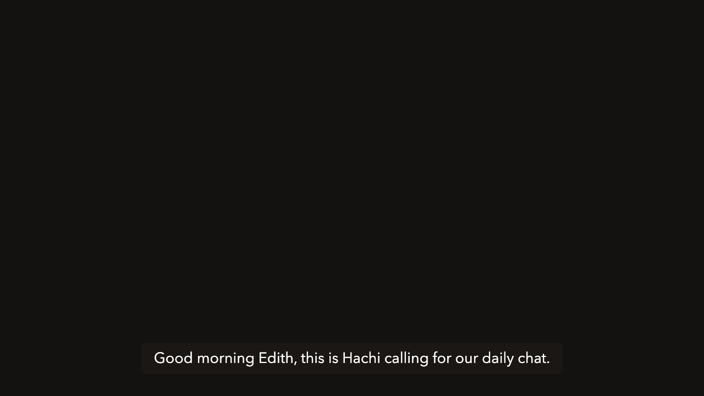

黒地に Hachi の第一声の字幕だけ。5 秒で「電話をかける AI」と分かったところでタイトル。
2世界の問題と出発点
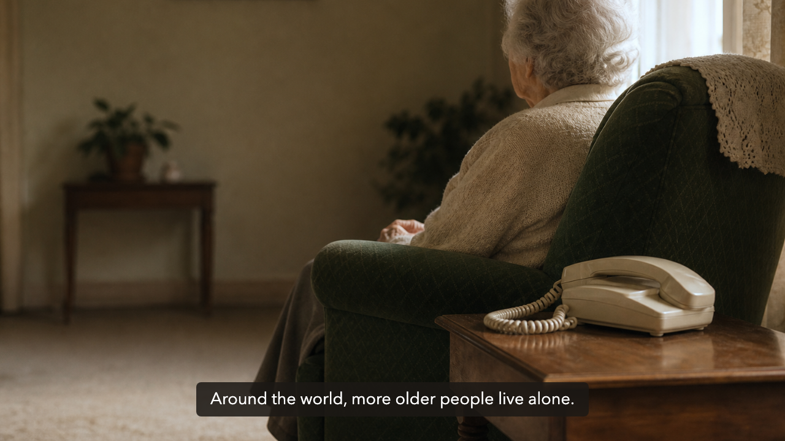
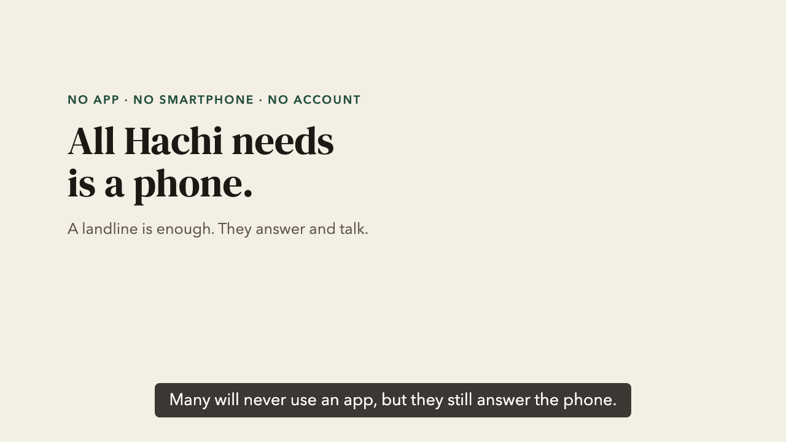
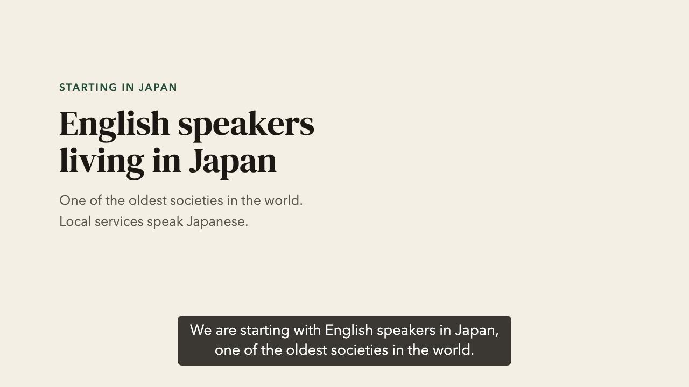
どの国の人にも自分の親に見える映像から。「電話なら届く」を文字カードで見せ、最後に日本は「出発点」として一度だけ。
一枚目は映像素材の代わりの生成画像3Edith と毎日の電話
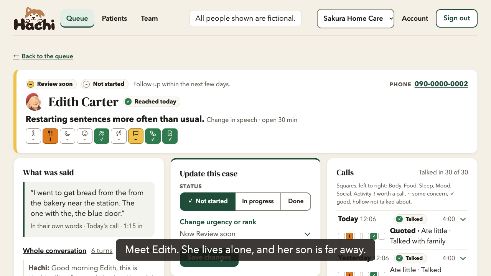
主人公 Edith の紹介。録音を再生し、文字起こしが流れる。AI だと名乗ること、本人の同意があってから電話することを字幕で補う。
4職員の待ち行列
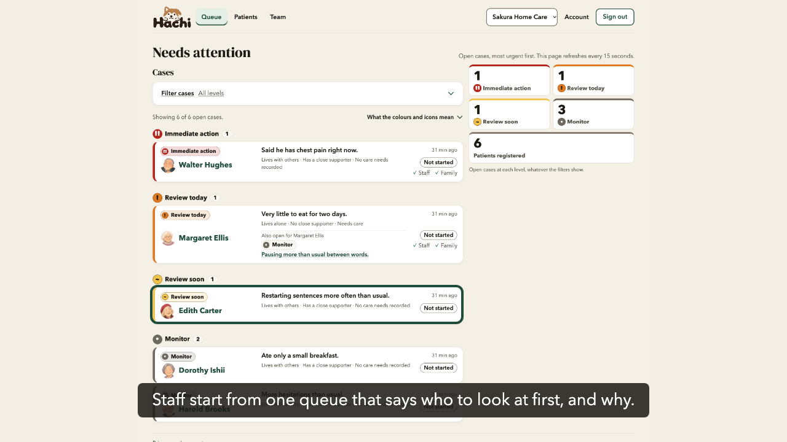
緊急度別のレーンを上から下へ。「誰から、なぜ」が一行で分かる。Review soon の Edith のカードで止めて、押す。
5Edith の小さな変化
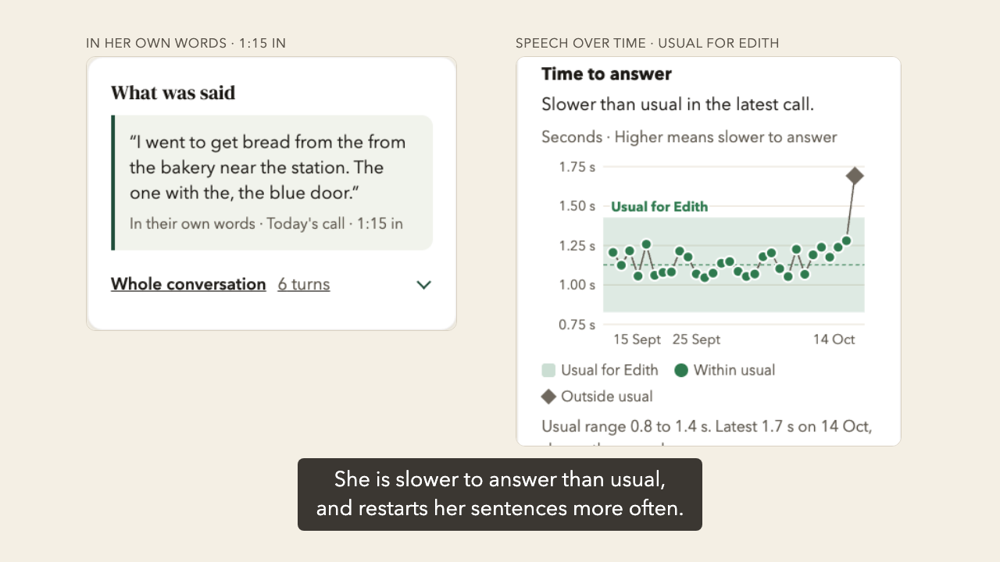
言ったことに問題はない。でも言い直しが聞こえる。本人の過去 4 週間の帯から、最新の点が外れている。診断ではなく変化の知らせ。
6緊急と沈黙
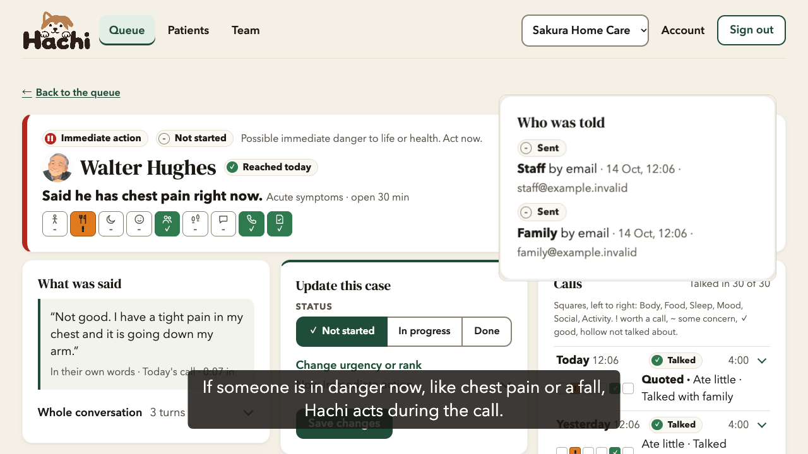
胸の痛みは通話中に動く。救急車を呼ぶよう促し、職員と家族を通話に呼ぶ。「誰に届いたか」の記録まで見せる。
完成イメージ。本番に映すケースは未作成7家族の画面
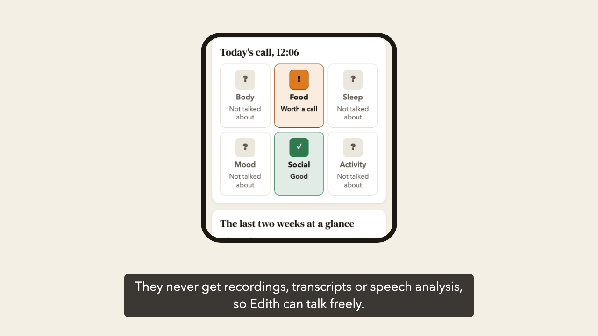
携帯の画面幅で。今日の通話、2 週間の一覧、繰り返し出る話題だけ。録音も文字起こしも、API が家族に渡さない。
8仕組み
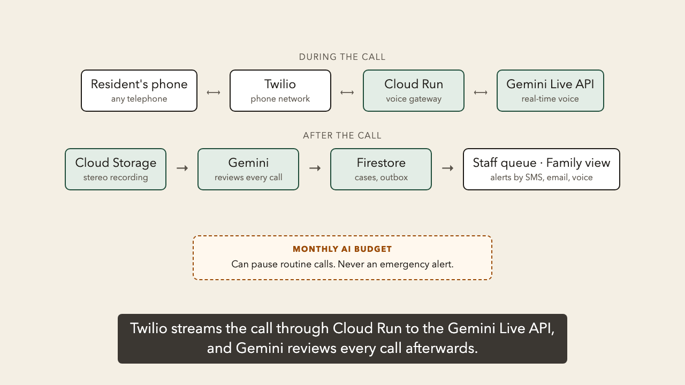
通話中は Twilio → Cloud Run → Gemini Live API、通話後は Gemini が全通話を見直す。月の AI 予算は緊急の連絡を止めない。
英語の構成図は新しく作る（今の architecture.png は日本語）9評価とこれから
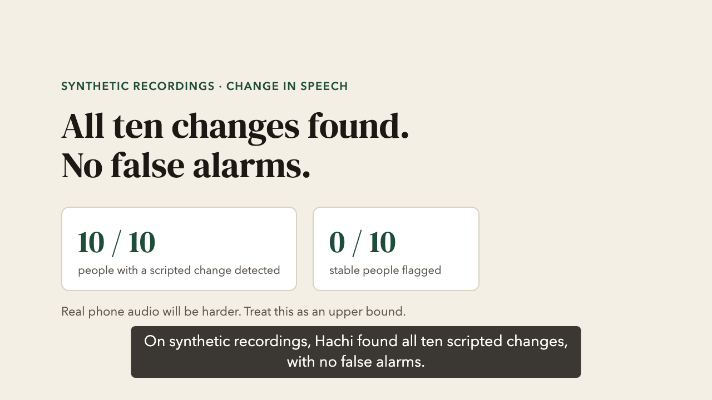
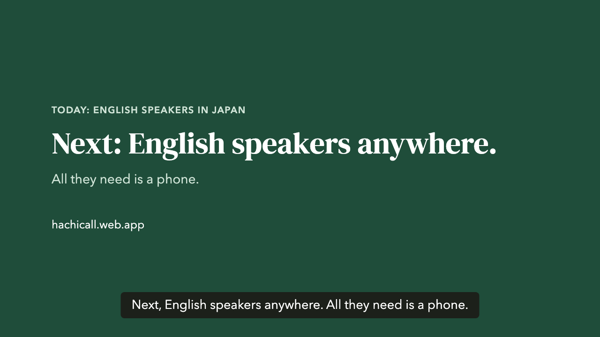
合成音声での結果を正直に（実際の電話はもっと難しい）。今は日本の英語話者、次は世界の英語話者。